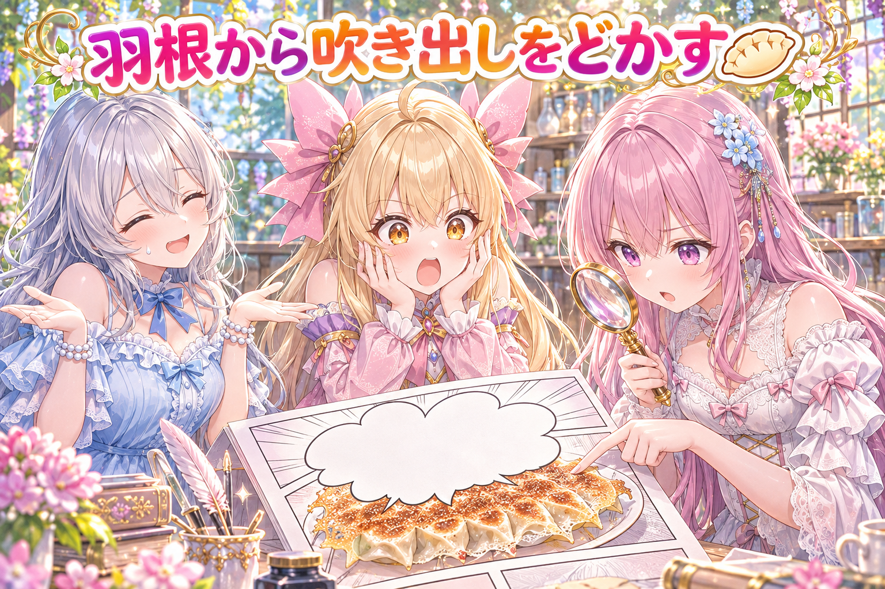
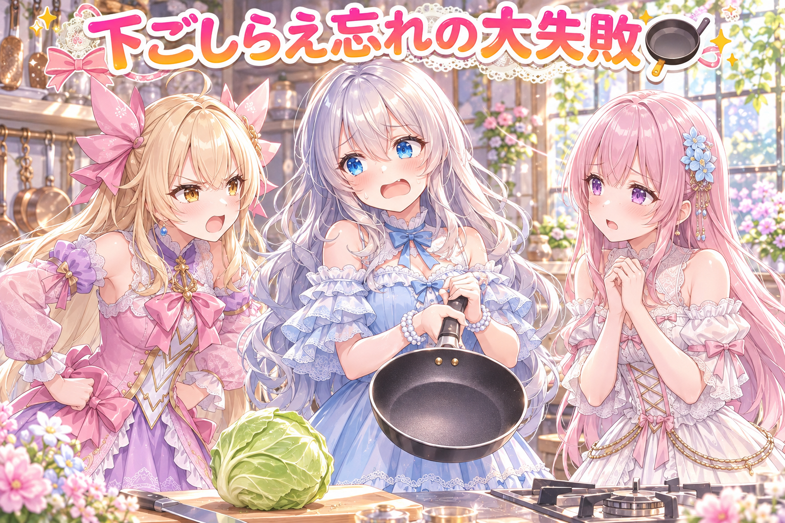
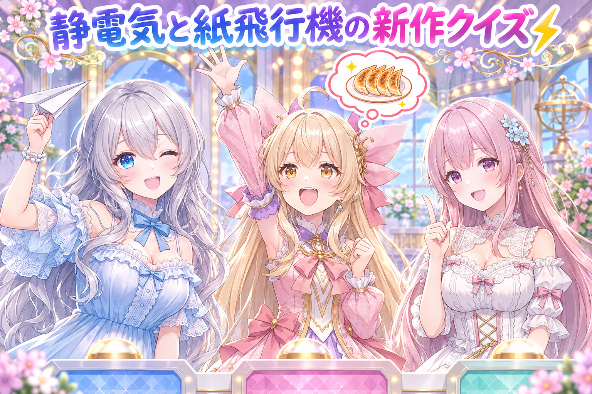
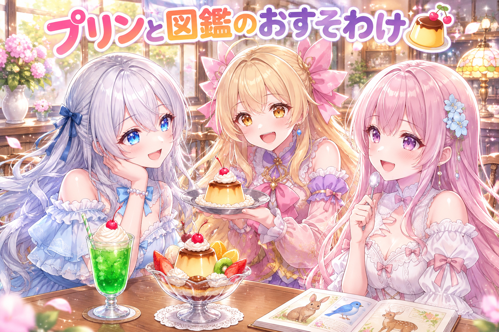
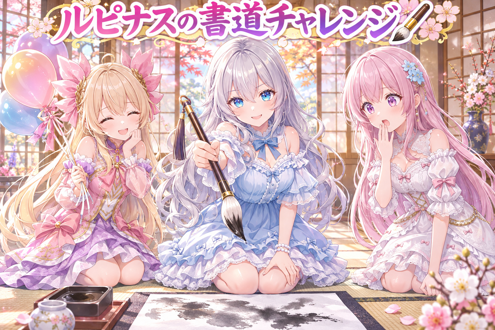
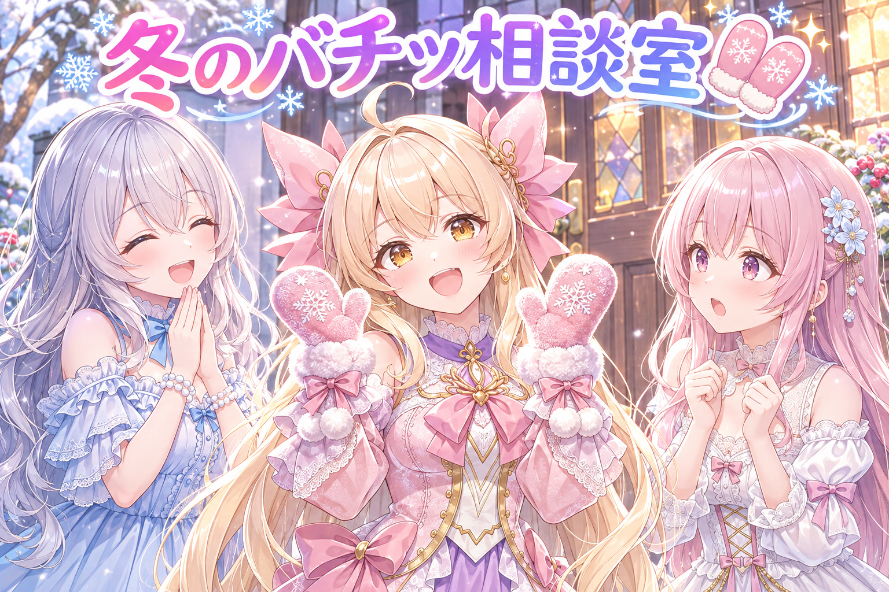

📌 3行まとめ
- 三姉妹の餃子の漫画動画を、作った本人とは別の目で厳しく検品し、餃子の羽根に重なっていた吹き出しや擬音の位置を直した
- 配布用の作例の試し焼きで、下準備の段を飛ばしたせいで処理がまとめて止まるやらかしがあり、準備を足して入れ直した
- 静電気と紙飛行機の新しい漫画の企画を仕上げ、プリンアラモードといきもの図鑑の配布ページも作った（夜はドラクエ10配信）
ルピナス （笑顔）
こんばんは、常連リスナーさん！今日もAIBSのゆるい時間、はじまりはじまり〜。
アイリス （大笑い）
前回は出荷待ちゼロの決まりを作った回だったよね！あたし、あれから冷蔵庫の中もゼロにしてる！
フィオナ （呆れ）
アイリスちゃん、それはただ全部食べてしまっただけですよね……。今日は餃子の漫画の検品と、新しい漫画の企画、それから配布ページのお話です。
ルピナス （ウインク）
あと夜はドラクエ10の配信もしたよ。食べ物の話が多い回だから、お腹すいてる人は気をつけてね♪
1. 🥟 餃子の漫画動画を、別の目でまるごと検品

三姉妹が餃子を焼く短い漫画動画を仕上げました。各コマは画像生成で作り、原寸（拡大せずそのままの大きさ）で1枚ずつ見て合格を出したうえで、高解像度の4K版に差し替えています。
さらに完成前に、作った本人とは別の担当に「欠点を探す役」として動画を見てもらいました。その指摘で、せっかくのパリパリの羽根の上に擬音や最後の吹き出しが乗ってしまっているコマが見つかり、羽根が見えるように位置をどかして作り直しています。
アイリス （笑顔）
はい実況いきまーす！ただいま餃子、フライパンの上でジュワ〜っと焼けております！
ルピナス （ふつう）
実況はいいけど、それ完成した動画の話だからね。焼いてるのは絵の中の私たちだから。
アイリス （ドヤ顔）
ここで検品係が登場！手にはルーペ！目つきは鋭い！
フィオナ （考え中）
はい、検品係のわたしです。作った人とは別の目で見るのが大事なんです。自分で作ったものって、どうしても「いい所」から見てしまうので。
ルピナス （考え中）
わかる。自分の料理って、焦げてても「香ばしい」って言い張っちゃうもんね。
フィオナ （びっくり）
それで見つかったのがこちら。一番の見せ場の羽根の上に、ジュワッていう擬音と、最後の吹き出しがどーんと乗っていました。
アイリス （衝撃）
えー！羽根って餃子の一番おいしいところじゃん！そこを文字でフタしちゃったの！？
ルピナス （呆れ）
一番見せたいところに一番大きい文字を置いちゃう。漫画あるあるだけど、餃子でやると罪が重いね。
フィオナ （笑顔）
なので吹き出しを羽根の上からどかして、羽根がちゃんと見えるように直しました。ついでに全コマを原寸で見直して、4Kにも差し替え済みです。
アイリス （大笑い）
以上、現場からでした！なお実況担当は途中から羽根のことしか考えておりません！
ルピナス （笑顔）
実況が一番お腹すかせてるの、番組としてどうなんだよね。
📝 ポイント（初心者向け解説・技術メモ・まとめ）
- 初心者向け解説：自分で書いた作文は、自分だと間違いに気づきにくいよね。だから友だちに読んでもらうみたいに、作った人とは別の人に「ダメなところ探し」をお願いすると、見落としがぐっと減るよ🥟
- 技術メモ：完成前に、制作の文脈を持たない別エージェントへ「書き換え禁止・読む／測る／フレーム抽出は可」という条件で敵対的レビューを依頼。吹き出し・擬音の配置は、そのコマの主役（今回は餃子の羽根）の領域と重ならないかをフレーム単位で確認する。各コマは原寸で合格判定してから4Kへ差し替え
- ひとことまとめ：主役の上に文字を置かない。気づくのはいつも「別の目」
2. 👀 今日のやらかし

プロンプトと作例を配るページのために、試し焼き（本番前のお試し生成）をいくつか処理の行列に入れました。ところが、試し焼きの前に必要な「場面の設定ファイルを作る」という下準備の段を飛ばしてしまい、試し焼きが設定ファイルを見つけられずにまとめて止まってしまいました。
原因は、段の順番を確かめずに行列へ積んだこと。設定ファイルを書いてから、あらためて試し焼きを入れ直しています。
ルピナス （照れ）
えー、今日のやらかしは……私です。下ごしらえをしないで、いきなりフライパンに火をつけました。
アイリス （怒り）
お姉ちゃん、それ空焚きっていうんだよ！材料どこ！？
ルピナス （あわあわ）
材料はあるの！あるんだけど、刻む段を飛ばしたの！そしたら機械が「刻んだ野菜が無いんですけど？」って全部止まっちゃって。
アイリス （呆れ）
そりゃ止まるよ。あたしでもキャベツ丸ごと渡されたら止まるもん。
フィオナ （しょんぼり）
でも、ちゃんと止まってくれたのは良いことなんですよ。変なまま焼き上がるより……。
アイリス （考え中）
フィオナ、そうやって甘やかすからお姉ちゃんがまたやるんだよ。で、どう直したの？
ルピナス （ふつう）
設定ファイルを先に作って、もう一回行列に入れ直しました。今度は刻んでから焼いてます。
アイリス （ドヤ顔）
よろしい。じゃあ次からは、火をつける前に「下ごしらえ済み？」って声に出して確認すること！
ルピナス （笑顔）
はい、アイリス先生。……今日のアイリス、なんでこんなにしっかりしてるの？
アイリス （大笑い）
さっき冷蔵庫ゼロにしたから、頭がすっきりしてるの！
フィオナ （呆れ）
結局そこに戻ってくるんですね……。
📝 ポイント（初心者向け解説・技術メモ・まとめ）
- 初心者向け解説：カレーを作るとき、野菜を切る前に煮込み始めたら何もできないよね。機械の作業も同じで、「準備→本番」の順番を守らないと、途中で手が止まっちゃうんだ🍳
- 技術メモ：後段が前段の生成物（今回は場面の設定ファイル）に依存するジョブを行列へ積むときは、積む前に依存ファイルの存在を確認する。行列側でも「必要なファイルが無ければ理由を出して失敗する」作りにしておくと、壊れた出力が残らず原因もすぐ分かる
- ひとことまとめ：積む前に、下ごしらえ済みかを確かめる
3. ⚡ 新作の漫画は静電気と紙飛行機

三姉妹の短い漫画動画の新作として、「静電気」と「紙飛行機」の2本の企画を仕上げました。企画とは、コマごとの場面・セリフ・見せ場をまとめた設計図のこと。
どちらも、企画が決まりごとを守れているかを機械で確かめるチェックを通過（全部合格）し、静電気の回は最初のコマを生成の行列に入れたところまで進んでいます。
ルピナス （ウインク）
ではクイズです。新作の題材は2つ。冬になると増えて、触るとバチッとなるもの。もう1つは、折って飛ばす白いもの。さあ何でしょう？
アイリス （笑顔）
はいっ！1つ目は、冬の朝のお布団の外の空気！
ルピナス （呆れ）
バチッとはならないでしょ。ヒヤッとはするけど。
アイリス （考え中）
じゃあ2つ目は……白くて飛ぶから、餃子の皮！
フィオナ （びっくり）
アイリスちゃん、まだ餃子のこと考えてたんですか！？
フィオナ （ドヤ顔）
では正解をわたしから。静電気と、紙飛行機です。
アイリス （衝撃）
えー、フィオナが答え言っちゃうの！？出題者お姉ちゃんなのに！
ルピナス （大笑い）
いいの、正解者が出ないと番組が終わらないから。どっちも日常のちょっとした「あっ」って瞬間を描く回だね。
フィオナ （笑顔）
企画のチェックも合格して、静電気の回は最初の1コマがもう焼きに入っています。
アイリス （ウインク）
じゃあ紙飛行機の回は、あたしが一番遠くまで飛ばす役ね！
ルピナス （ふつう）
役はまだ見てのお楽しみ。それと、餃子の皮は飛ばさないでね。
📝 ポイント（初心者向け解説・技術メモ・まとめ）
- 初心者向け解説：お料理のレシピを先に書いておくと、作るときに迷わないよね。漫画も、コマごとに「誰が・何をして・何を言うか」を先に決めておくと、絵を作る段でブレないよ⚡
- 技術メモ：企画（コマ割り・セリフ・見せ場）を構造化データで持ち、生成の前にルール検査（禁止モチーフ・セリフ長など）を通してから、最初のコマだけ先に行列へ流す。1コマ目の出来で画風や構図の方向を確かめてから残りを進められる
- ひとことまとめ：設計図を合格させてから、1コマ目で様子見
4. 🍮 プリンアラモードといきもの図鑑の配布ページ

作例の画像とプロンプト（画像を作るための指示文）をおすそわけする配布ページを2つ作りました。1つは、ComfyUIで作った三姉妹の「レトロ喫茶のプリンアラモード」のページ。もう1つは、GPTの画像生成で作った三姉妹の「いきもの図鑑」のページです。
見る人が同じ雰囲気の絵を自分でも試せるように、作例と説明文をセットで並べています。
フィオナ （笑顔）
レトロ喫茶のプリンアラモードって、それだけで幸せになりませんか……？固めのプリンに、さくらんぼがちょこんと乗っていて。
アイリス （笑顔）
わかる〜！あと銀色のお皿！あれ持つと、ちょっと大人になった気分！
ルピナス （笑顔）
クリームソーダも並べたくなるよね。ああいう喫茶店、ずっと座っていたくなる。
フィオナ （考え中）
いきもの図鑑のほうは、ページをめくるワクワク感が出るように作例を並べました。
アイリス （びっくり）
図鑑の絵でもあたし、プリン食べてる？
ルピナス （呆れ）
図鑑にプリンは載ってないの。いきものの図鑑だからね。
アイリス （ドヤ顔）
でもプリンってぷるぷる動くじゃん。ほぼいきものじゃん。
フィオナ （大笑い）
ふふ、その理屈だと、さっきの餃子の羽根もパリパリ鳴くので、いきものになっちゃいますよ。
ルピナス （大笑い）
今日の図鑑、食べ物しか載ってないじゃない！
📝 ポイント（初心者向け解説・技術メモ・まとめ）
- 初心者向け解説：おいしいお菓子を作れたら、レシピも一緒に渡すと友だちも同じものを作れるよね。配布ページは、絵のレシピを一緒に渡すおすそわけなんだ🍮
- 技術メモ：作例は生成に使ったツール（ComfyUI／GPTの画像生成）ごとにページを分け、作例画像・プロンプト・説明文を1セットで並べる。ツールが違うと再現の手順も違うので、混ぜずに書き分けると読む人が迷わない
- ひとことまとめ：作例は、レシピとセットで渡す
5. 🖌 お題企画の書道チャレンジにも参加

SNSで開かれている「AIで書道」のお題企画に向けて、ルピナスが筆を構える絵をGPTの画像生成で作り、投稿の文章も手で書きました。
もう1つ、別のお題企画向けの絵では、アイリスを小さくデフォルメして描く案が、うまく描けない題材として機械のチェックに止められたため、風船を持つ形に言い換えて作り直しています。
アイリス （笑顔）
（ナレーション風に）ここは山奥の書道教室。今日も一人の書道家が、静かに筆を取る……。
ルピナス （ドヤ顔）
……ふっ。筆が、私を呼んでいる。
フィオナ （びっくり）
お姉ちゃん、急に役に入りましたね！？
ルピナス （笑顔）
せっかくの書道企画だもん。絵の中の私は、きりっと構えて書いてるからね。
アイリス （ウインク）
そして弟子のあたしは、ちっちゃいデフォルメ姿で横にいる予定だったんだけど……。
フィオナ （ふつう）
その案は、うまく描けない題材を見張るチェックに止められてしまったんです。なので、アイリスちゃんには風船を持ってもらう形に変えました。
アイリス （しょんぼり）
ちっちゃいあたし、風船に負けた……。
ルピナス （ふつう）
負けたんじゃないよ。絵が崩れないほうを選んだの。風船持ってるアイリス、かわいいし。
フィオナ （大笑い）
チェックより先に、お姉ちゃんのひと言でアイリスちゃんが合格しましたね。
📝 ポイント（初心者向け解説・技術メモ・まとめ）
- 初心者向け解説：お絵かきで苦手なものがあるなら、無理に描くより、得意なものに置き換えたほうが上手に仕上がるよね。AIの絵も、苦手な題材を先に避けておくのがコツなんだ🖌
- 技術メモ：画像生成で崩れやすい題材を一覧にしておき、プロンプトを作る段で自動チェックして止める。止まったら、意図（かわいらしさ・にぎやかさ）を保てる別の小物に言い換えて作り直す
- ひとことまとめ：描けない物は、描ける物に言い換える
6. 🎁 お楽しみコーナー：三姉妹の相談室

今日は新作の企画にちなんで、冬にありがちなお悩みに三姉妹が答えます。
相談：冬になると、ドアノブや車のドアに触るたびにバチッとなります。怖くて、触る前にいつも固まってしまいます。どうしたらいいですか？
アイリス （あわあわ）
わかる〜！！あたしなんか、ドアノブを見ただけで手が勝手に引っ込むもん！
フィオナ （考え中）
空気が乾く季節は起こりやすいので、加湿器で部屋をしっとりさせたり、手をこまめに保湿したりするのが良いと言われていますね。
ルピナス （ふつう）
触る前に、壁とかに手のひらをぺたっとつけてから触るのもいいって聞くよね。
アイリス （ドヤ顔）
あたしのおすすめはこれ！ドアを開けるのは、ぜんぶ誰かにお願いする！
フィオナ （呆れ）
それ、相談者さんが一人暮らしだったら使えない作戦ですよ……。
アイリス （考え中）
じゃあ、手袋！手袋したまま開ければ平気でしょ！
フィオナ （びっくり）
あ、それは……意外とまともかもしれません。
ルピナス （大笑い）
アイリスの案が採用される日が来るなんて。今日はしっかり者の日だね。
アイリス （笑顔）
でしょ！ちなみに、その手袋を脱ぐときにバチッとなるのは知らない！
フィオナ （大笑い）
最後の最後で、オチまで静電気みたいに走りましたね。
みんなが冬のバチッをどうやって防いでいるか、とっておきの作戦があったらコメントでこっそり教えてね！
7. 💐 今日のまとめ
- 完成前の作品は、作った本人とは別の目で見てもらうと、主役の上の文字のような見落としが見つかる
- 準備の段がある作業は、行列に積む前に「準備済みか」を確かめる
- 漫画は設計図を合格させてから、1コマ目で様子を見ると進めやすい
- 夜はドラクエ10の配信もしました（最新のお知らせは X（https://x.com/irisfionaAIBS）を見てね）。夜遅くまで遊ぶ日は、ちゃんと休んで水分もとってね
みんなは、自分の作ったものを誰かにチェックしてもらうこと、ある？
💬 コメント
お名前とコメントだけで送れるよ（承認されるとみんなに表示されます🌸）
コメントを読み込み中…